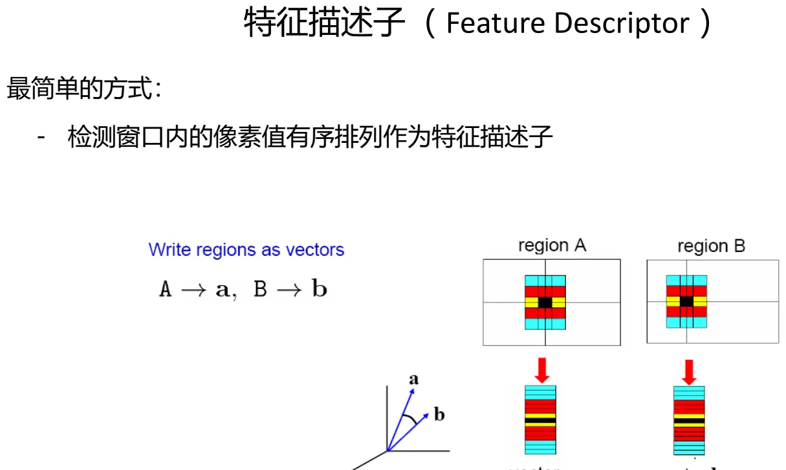
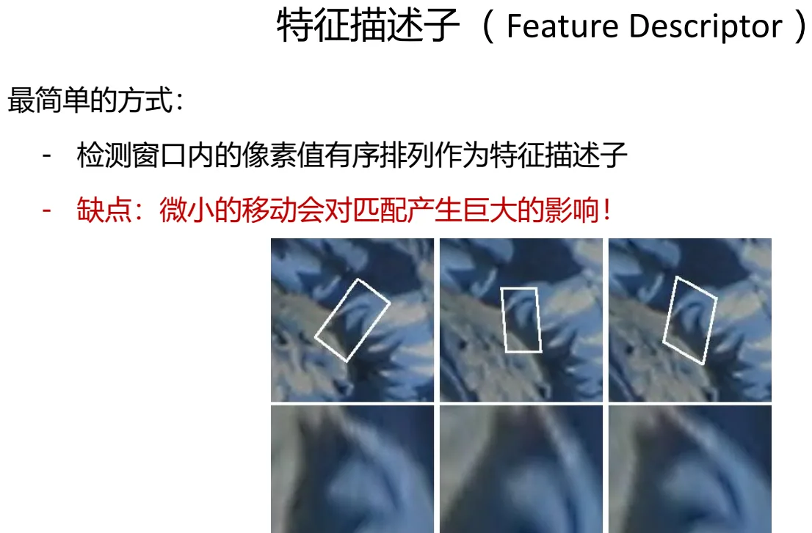
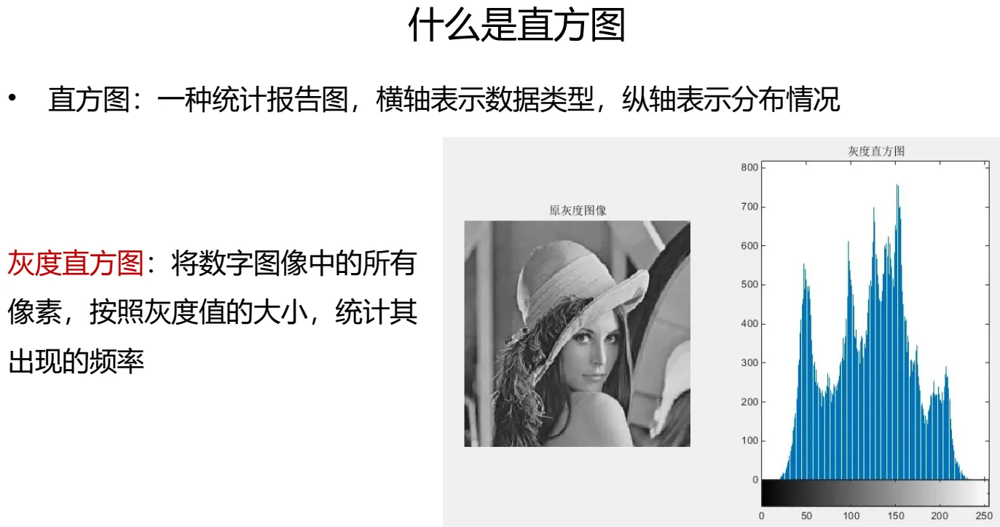
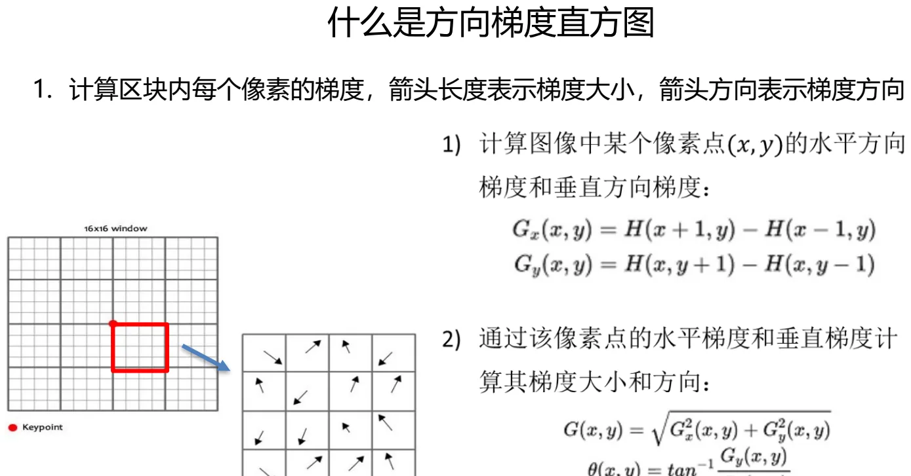
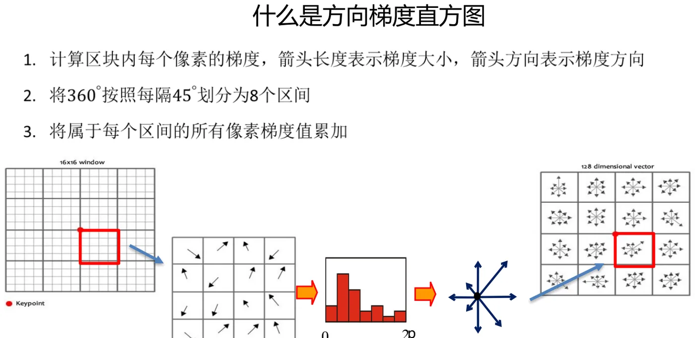
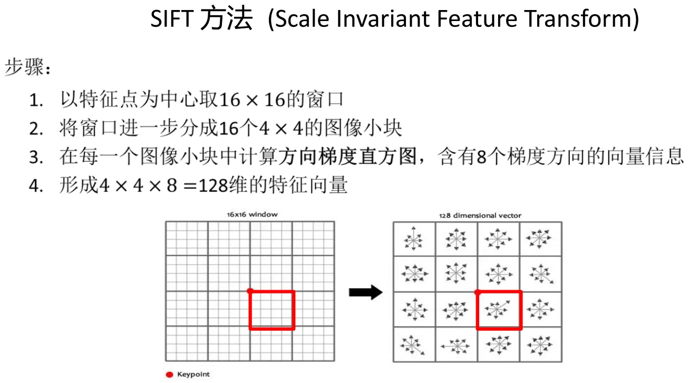
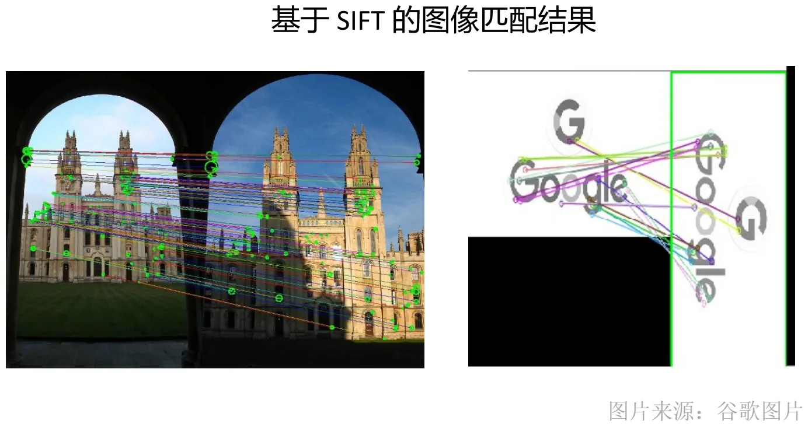

计算机视觉 · 第 4 章 特征检测与匹配
4.4 特征描述子与 SIFT
检测解决了「在哪儿看」，这一节解决「看到的是什么」。课件在这一节开头又把全章反复出现的那张 Main questions 过渡页摆了出来——特征点从何而来？怎么在多幅图像中检测相同的、显著性的特征点？如何描述局部特征使其保证独特性？如何建立特征点之间的对应关系（如何计算匹配）？前两问已经由 Harris、LoG/DoG 回答，这一节回答第三问。课件从最朴素的描述子讲起——把窗口里的像素值排成一列——然后立刻指出它为什么不能用：图像稍微一动，向量就全变了。出路是把「逐个像素」换成「统计分布」，于是引出方向梯度直方图，并由此得到 SIFT 描述子：16×16 的窗口、16 个 4×4 的小块、每块 8 个梯度方向，拼成 128 维的特征向量。这一节也顺手把「直方图」这个基础工具交代清楚。
1. 最朴素的描述子，以及它为什么不行
给定一个关键点，怎么把它变成可以比较的东西？最直接的想法是：把检测窗口内的像素值有序排列，作为特征描述子。课件把这个动作画成了一个从区域到向量的映射——region A 写成向量 a，region B 写成向量 b，两个区域能不能对上，就看 a 和 b 像不像。

这个办法的缺点很致命：微小的移动会对匹配产生巨大的影响。因为向量里每个元素对应的是固定位置上的那一个像素——窗口平移一个像素，整列数值就整体错位，两个本来完全相同的区域会算出完全不同的向量。也就是说，这种描述子不具任何平移容忍度，更谈不上旋转和光照不变性。

问题出在「逐点比较」这四个字上。要想稳定，描述子就不该记住「哪个位置是什么值」，而应该记住「这块区域整体呈现出什么样的结构」——统计量天然具备这种性质。这就是下面两步的动机。
2. 两个预备知识：直方图与方向梯度直方图
（1）什么是直方图
课件先补了最基础的工具：直方图是一种统计报告图，横轴表示数据类型，纵轴表示分布情况。用到图像上，就得到灰度直方图：将数字图像中的所有像素，按照灰度值的大小，统计其出现的频率。图中给出了原灰度图像与它对应的灰度直方图——图像里有多少偏暗的像素、多少偏亮的像素，一眼就能看出来。

直方图的价值在于丢掉了空间位置、保留了整体分布。这一点恰好治好了上一个描述子的病：像素整体挪动一点，直方图的形状几乎不变。
（2）什么是方向梯度直方图
描述局部结构，光有灰度不够，还要看变化的方向。课件的第一步是计算区块内每个像素的梯度——箭头长度表示梯度大小，箭头方向表示梯度方向：
- 水平方向梯度：Gx(x, y) = I(x+1, y) − I(x−1, y)
- 垂直方向梯度：Gy(x, y) = I(x, y+1) − I(x, y−1)
- 梯度大小：G(x, y) = √( Gx²(x, y) + Gy²(x, y) )，方向由 Gx、Gy 决定

第二步是把方向离散化并累加：将 360° 按照每隔 45° 划分为 8 个区间，再把属于每个区间的所有像素梯度值累加起来，就得到一个 8 维的方向梯度直方图。到这里，「一块区域的形状」被压缩成了 8 个数字——而且是统计量，不再是逐像素的排列。

3. SIFT 描述子：128 维从哪来
把方向梯度直方图组织起来，就是 SIFT 描述子。课件（Scale Invariant Feature Transform）给出的步骤是：
- 以特征点为中心取 16×16 的窗口；
- 将窗口进一步分成 16 个 4×4 的图像小块；
- 在每一个图像小块中计算方向梯度直方图，含有 8 个梯度方向的向量信息；
- 形成 4×4×8 = 128 维的特征向量。

这个设计里有三处值得琢磨：
- 为什么分块？因为整块算一个直方图太粗——「左上角有竖边、右下角有横边」和「全局横竖各半」会得到一样的结果。分成 4×4 块以后，每块的位置信息被保留在向量的不同段里，形状的空间分布就带上了。
- 为什么是 128 维？4×4 块 × 每块 8 个方向 = 128，是「空间分辨率」与「描述长度」之间的折中。维度太低区分不开，太高则对噪声和形变敏感、匹配也变慢。
- 为什么不用逐像素？因为每块用的是梯度的方向直方图——等于把这块区域的边缘方向结构统计出来。像素整体挪一点、亮度整体变一点，直方图基本不变；而 4.3 节又已经用 (x, y, σ) 把尺度标定好了，可能的话再把方向对齐，就能兼顾尺度与旋转。
4. SIFT 的特性与匹配效果
课件用一页总结 SIFT 的适用范围：可以应对视角变化——能够识别超过 60° 的视角变化；能够应对显著的光线变化——有时甚至可以将同一场景的白天和黑夜图像进行匹配。课件同时给出了可直接上手的代码资源（github.com/deepanshut041/feature-detection 与一篇 CSDN 博客）。
最后一张是效果图：在两幅图像之间用 SIFT 特征做匹配，把匹配上的点用连线画出来。4.1 节开头那个「仔细看彩色方框……他们对应同一区域」的动机图，用的正是这套方法的输出。

本节小结
- 最朴素的描述子是把检测窗口内的像素值有序排列成向量；缺点是微小的移动会对匹配产生巨大的影响——逐点比较毫无平移容忍度。
- 出路是用统计量代替逐像素：直方图横轴为数据类型、纵轴为分布情况；灰度直方图把像素按灰度值统计出现频率，丢掉了空间位置、保住了整体分布。
- 描述局部结构要看梯度方向：Gx = I(x+1,y) − I(x−1,y)，Gy = I(x,y+1) − I(x,y−1)，G = √(Gx²+Gy²)；把 360° 每 45° 划分成 8 个区间并累加，得到方向梯度直方图。
- SIFT 描述子：16×16 窗口 → 16 个 4×4 小块 → 每块 8 个方向的方向梯度直方图 → 4×4×8 = 128 维特征向量。
- SIFT 的特性：能应对超过 60° 的视角变化，也能应对显著的光线变化（白天与黑夜图像有时也能匹配）；Lowe 的原文发表于 IJCV 60(2), 2004。